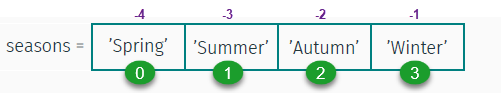

Colecciones¶
Los tipos de colecciones más utilizados son
listuna lista ordenada y mutable de valorestupleuna lista ordenada e inmutable de valoressetuna lista mutable pero no ordenada de valoresdictun diccionario no ordenado
Listas¶
Haciendo listas¶
Para hacer una lista, enumeramos sus elemento entre un par de [ ]
seasons = ['Spring', 'Summer','Autumn','Winter']
seasons
['Spring', 'Summer', 'Autumn', 'Winter']

Las listas pueden tener elementos heterogéneos
mylist = [4, 3.0, 'abc', 5, 8, -3, 0 , 2]
mylist
[4, 3.0, 'abc', 5, 8, -3, 0, 2]
Para modificar los datos:¶
seasons[2] = 'Fall'
seasons
['Spring', 'Summer', 'Fall', 'Winter']
Slicing¶
Para obtener una franja de datos:
mylist
[4, 3.0, 'abc', 5, 8, -3, 0, 2]
mylist[2:4]
['abc', 5]
mylist[:3]
[4, 3.0, 'abc']
mylist[5:]
[-3, 0, 2]
mylist[-2:]
[0, 2]
mylist[3:4] # a pesar de que es un solo elemento, retorna una lista
[5]
mylist[3]
5
mylist[3:3]
[]
mylist[::2]
[4, 'abc', 8, 0]
mylist[1::2]
[3.0, 5, -3, 2]
Copiando una lista¶
nueva_lista = vieja_listahace una variable nueva que apunta a la misma lista que la lista anterior:
otralista = mylist
otralista
[4, 3.0, 'abc', 5, 8, -3, 0, 2]
otralista[0] = 99999
otralista
[99999, 3.0, 'abc', 5, 8, -3, 0, 2]
mylist
[99999, 3.0, 'abc', 5, 8, -3, 0, 2]
Vemos que es la misma lista al comparar sus id:
print(id(otralista), id(mylist),sep='\n')
139806897180480
139806897180480
otralista is mylist
True
nueva_lista = vieja_lista.copy()hace una copia independiente de la original:
copialista = mylist.copy()
copialista[-1] = 'copia independiente de la original'
print('copialista = ', copialista)
print('mylist = ', mylist)
print('otralista = ', mylist)
print(f'copialista es {id(copialista)}', f'mylist es {id(mylist)}', f'otralista es {id(otralista)}', sep='\n')
copialista = [99999, 3.0, 'abc', 5, 8, -3, 0, 'copia independiente de la original']
mylist = [99999, 3.0, 'abc', 5, 8, -3, 0, 2]
otralista = [99999, 3.0, 'abc', 5, 8, -3, 0, 2]
copialista es 139806896827840
mylist es 139806897180480
otralista es 139806897180480
Manipulando listas¶
fruit = ['apple','orange','grape','kiwi']
list.append(x) Agrega el elemento x al final de la lista¶
fruit.append('apple')
fruit
['apple', 'orange', 'grape', 'kiwi', 'apple']
list.extend(L) Agrega todos los elementos de la lista L al final de la lista¶
fruit.extend(['mango','banana','kiwi'])
fruit
['apple', 'orange', 'grape', 'kiwi', 'apple', 'mango', 'banana', 'kiwi']
list.insert(i,x) Inserta el elemento x en la posición de índice i¶
fruit.insert(2,'guava')
fruit
['apple',
'orange',
'guava',
'grape',
'kiwi',
'apple',
'mango',
'banana',
'kiwi']
len(list) cuenta el número de elementos de la lista¶
len(fruit)
9
list.remove(x) Elimina el primer elemento x de la lista¶
fruit.remove('kiwi')
fruit
['apple', 'orange', 'guava', 'grape', 'apple', 'mango', 'banana', 'kiwi']
list.pop(i) Eliminina el elemento en la posición i y lo retorna¶
fruit.pop()
fruit
['apple', 'orange', 'guava', 'grape', 'apple', 'mango', 'banana']
list.index(x) Retorna el índice del primer elemento x de la lista¶
fruit.index('grape')
3
list.count(x) Retorna el número de veces que aparece x en la lista¶
fruit.count('apple')
2
list.sort() Ordena todos los elementos de la lista, in situ¶
fruit.sort()
fruit
['apple', 'apple', 'banana', 'grape', 'guava', 'mango', 'orange']
list.reverse() Revierte el orden de todos los elementos de la lista, in situ¶
fruit.reverse()
fruit
['orange', 'mango', 'guava', 'grape', 'banana', 'apple', 'apple']
fruit.sort(reverse=True)
Tuplas¶
Una tupla es similar a una lista, pero una vez que se define sus elementos no pueden cambiarse. Se define enumerando sus elementos entre un par de ( )
seasons = ('Spring', 'Summer','Autumn','Winter')

Para obtener datos:
seasons[2]
'Autumn'
seasons[-3]
'Summer'
Sin embargo, los datos no se pueden modificar
seasons[2] = 'Fall'
---------------------------------------------------------------------------
TypeError Traceback (most recent call last)
<ipython-input-37-3a773b804719> in <module>
----> 1 seasons[2] = 'Fall'
TypeError: 'tuple' object does not support item assignment
Las tuplas también entienden de franjas
M = ('Jan', 'Feb', 'Mar', 'Apr', 'May', 'Jun', \
'Jul','Aug','Sep','Oct','Nov','Dec')
M
('Jan',
'Feb',
'Mar',
'Apr',
'May',
'Jun',
'Jul',
'Aug',
'Sep',
'Oct',
'Nov',
'Dec')
# To split the months into quarters:
Q1, Q2, Q3, Q4 = M[:3], M[3:6], M[6:9], M[9:]
Q2
('Apr', 'May', 'Jun')
Para hacer una tupla de un único elemento:
solo = (55, )
type(solo)
tuple
Conjuntos¶
Para hacer un conjunto, enumeramos sus elementos entre { }. Alternativamento, transformamos una lista en un conjunto usando la función set.
Operaciones con conjuntos¶
M2 = {2, 4, 6, 8, 10, 12, 14}
M3 = set([3, 6, 9, 12, 15])
set.add(x) Agrega un elemento x al conjunto¶
M2.add(16)
M2
{2, 4, 6, 8, 10, 12, 14, 16}
set.update([x,y,z]) Agrega varios elementos al conjunto¶
M3.update([18, 21])
M3
{3, 6, 9, 12, 15, 18, 21}
set.copy() Retorna una copia del conjunto¶
M2c = M2.copy()
M2c
{2, 4, 6, 8, 10, 12, 14, 16}
set.discard(x) Elimina el elemnto x del conjunto (si es miembro)¶
M2c.discard(10)
M2c
{4, 6, 8, 12, 14, 16}
set1.union(set2) Retorna elementos que aparecen en cualquiera de los conjuntos¶
M2.union(M3)
{2, 3, 4, 6, 8, 9, 10, 12, 14, 15, 16, 18, 21}
set1.intersection(set2) Retorna elementos que aparecen en los dos conjuntos¶
M3.intersection(M2)
{6, 12}
set1.difference(set2) Retorna elementos del conjunto set1 que no estén en set2¶
M2.difference(M3)
{2, 4, 8, 10, 14, 16}
set1.isdisjoint(set2) True si los conjuntos no tienen elementos en común¶
M2.isdisjoint(M3)
False
Diccionarios¶
En Python un “diccionario” es un contenedor de datos que puede almacenar múltiples elementos de datos como una lista de pares
llave:valor.A diferencia de las listas y tuplas, cuyos datos se obtienen por referencia a su índice, los valores almacenados en un diccionario se obtienen por referencia a su llave.
La llave debe ser única en el diccionario, usualmente se una un texto aunque también puede usarse números.
king = {'name': 'John Snow',
'age': 24,
'home': 'Winterfell'}
king
{'name': 'John Snow', 'age': 24, 'home': 'Winterfell'}
Los diccionarios se pueden crear con la función dict:
friend = dict(name='Samwell Tarly', age=22)
friend
{'name': 'Samwell Tarly', 'age': 22}
Obteniendo datos
king['age']
24
Modificando datos:
king['home'] = 'Castle Black'
king
{'name': 'John Snow', 'age': 24, 'home': 'Castle Black'}
Agregando datos:
king['lover'] = 'Ygritte'
king['knows'] = None
king
{'name': 'John Snow',
'age': 24,
'home': 'Castle Black',
'lover': 'Ygritte',
'knows': None}
Borrando datos:
del king['lover'] # killed by Olly!
king
{'name': 'John Snow', 'age': 24, 'home': 'Castle Black', 'knows': None}
Para almacenar un texto muy largo, podemos encerrarlo en triples comillas dobles:
king['lover'] = """Daenerys Stormborn of the House Targaryen, First of Her Name,
The Unburnt, Queen of the Andals and the First Men, Khaleesi of the Great Grass Sea,
Breaker of Chains, and Mother of Dragons"""
print(king['lover'])
Daenerys Stormborn of the House Targaryen, First of Her Name,
The Unburnt, Queen of the Andals and the First Men, Khaleesi of the Great Grass Sea,
Breaker of Chains, and Mother of Dragons